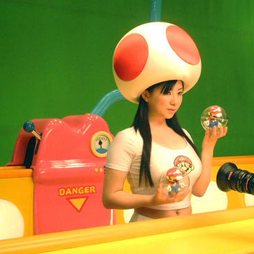

about me
 Software:
Software:
Torta
Karmack
Plata
FUmanchu!
Rants:
AboutMe
Blogging
El origen del hombre americano
Propositos2006
Propositos2007
SWFing
Pictures:
Sicilia -
thumbs
Visita Dimo 2007 -
thumbs
Tokyo -
thumbs
Barcelona -
thumbs
Lisbon -
thumbs
Gilberto Gil -
thumbs
Visita Fidel -
thumbs
Hiver -
thumbs
Dogs -
thumbs
Italy -
thumbs
Eurockeennes -
thumbs
Grenoble -
thumbs
Chipie -
thumbs
Place aux Herbes -
thumbs
Eek Friends:
 Alejo Alejo
Javier
Nelson
Old Posts:
Archive
Created with:
emacs
bash
libXSLT


 Dimo's Art
Quebec Hispano
Dimo's Art
Quebec Hispano
|
|
2004 - June |
|
A pesar de haber terminado el DEA (primer año de la escuela doctoral
en Francia) hace dos años, no fue sino hasta hoy que fui a recoger el
tal diploma. Asi que felicitenme dos veces, porque aparte de graduarme
también estoy cumpliendo años. P.D.: La redaccion agradece
a los que felicitaron.
|
|
LOOK OUT!
|
| chipie is a radioactive squirrel!! |
From Go-Quiz.com
Si no me hubiera reido tanto con lo que salio, no hubiera puesto el warning message anterior, el HTML que dan esta roto.
Creo que Skype se va a convertir rapidamente en la proxima killer application. Permite conversar (voz) con otros usuarios y la calidad de la transmision es mucho mejor que la que ofrecen MSN o yahoo IM, pruebenlo. Ahora hay un cliente para GNU/Linux!
Estoy pensando fundar el Cult Of Chipie, interesados en ingresar a esta hermetica sociedad favor dejar un comentario.
|
|
Todas las fotos me salieron como esa, asi que no tiene objeto publicarlas. En resumen, la fiesta de la musica estuvo buena, como siempre. He pasado una fiesta de la musica en Strasbourg, una en Montpellier y dos en Grenoble. La fiesta de la musica es un evento en Francia celebrado el 21 de junio, donde todo aquel que quiere sale a tocar a la calle. Se ve de todo, algunas buenas bandas por aqui y por alla, muchas bandas de amateurs tocando los "covers" de siempre, gospel, electronica, ancianos gritando "...you give loveeee baaaaaad name...", etc.
|
|
Nicolas Sarkozy, amado y odiado ex-ministro del interior frances estuvo hoy visitando el lugar donde trabajo. Fue recibido como es debido por la gente de la CGT y uno que otro empleado de Rennes de los que se quedaron sin trabajo simplemente porque un ingeniero en India cuesta diez veces menos.
Ya empezo a tocar alguna banda un cover de Radiohead aca abajo, asi que me voy a la fiesta de la musica. Esperen fotos.
|
|
|

Nintendo manda.
|
|
El fin de semana antepasado, Alejo, Arhuaco y yo participamos en el concurso de la ICFP. Es una competencia en la cual un problema de programación debe ser resuelto en tres días. No hay una única solución correcta, todas las soluciones son enfrentadas entre ellas para definir al ganador. Hay algunos premios, pero realmente la gente participa por la diversión, el reto, y la reputación del concurso.
El problema este año era programar una hormiga en cierto lenguaje de programación de hormigas definido por los organizadores. Las hormigas pueden moverse, observar el area donde se encuentran, y dejar marcas a otras hormigas. El objetivo de las hormigas es reunir comida. Dos hormigueros son enfrentados por cada "match" y el hormiguero con mas comida reunida al final de cierto numero de turnos es declarado vencedor.
Nosotros, y la mayora de los demás participantes, dividimos el problema en varias etapas : escribir el simulador que interprete los programas de las hormigas, escribir un compilador que facilite el escribir hormigas, escribir un buen programa hormiga. Desafortunadamente al final de las dos primeras etapas no nos quedo tiempo para escribir una buena hormiga, lo cual hace que no tengamos posibilidades de ganar. Horas despues de terminado el concurso, Alejo escribio una nueva hormiga varias veces superior a las que ya teniamos.
Alejo hizo casi todo el trabajo, o por lo menos escribio todo el código importante. Es increible la velocidad con la que escribe código de muy buena calidad. Arhuaco y yo no eramos capaces de seguir el ritmo. Me quedan varias ideas:
- Hay que ser mas disciplinados con el manejo del tiempo. No hay que perder de vista el problema real. Nosotros terminamos con un compilador muy sofisticado, y ninguna hormiga.
- Es muy dificil trabajar de manera concurrente sobre los mismos artefactos. Sobre todo cuando una de las personas es mucho mas rapida que las otras. Yo solo pude ayudar cuando hice trabajo desacoplado de lo que estaban haciendo Alejo y Arhuaco al mismo tiempo.
- Por esto mismo, creo que lo mas sano es que cada persona trabaje en modulos lo mas desacoplados posible de los demas, aun si esto implica repetir o perder algo de trabajo. Arhuaco y yo hubieramos podido intentar otro lenguaje mucho mas sencillo, y escribir mas hormigas en él. En vez de eso, nos quedamos duditativos esperando a que Alejo estabilisara el lenguaje, sin avanzar por nuestra cuenta. Es preferible repetir trabajo, que no hacer nada.
- Me hace falta programar muchisimo.
- El otro año nos irá mucho mejor.
|
|
 Peluqueamos a la Chipie la semana pasada.
Peluqueamos a la Chipie la semana pasada.
|
|
|

 Save this post]
Save this post]